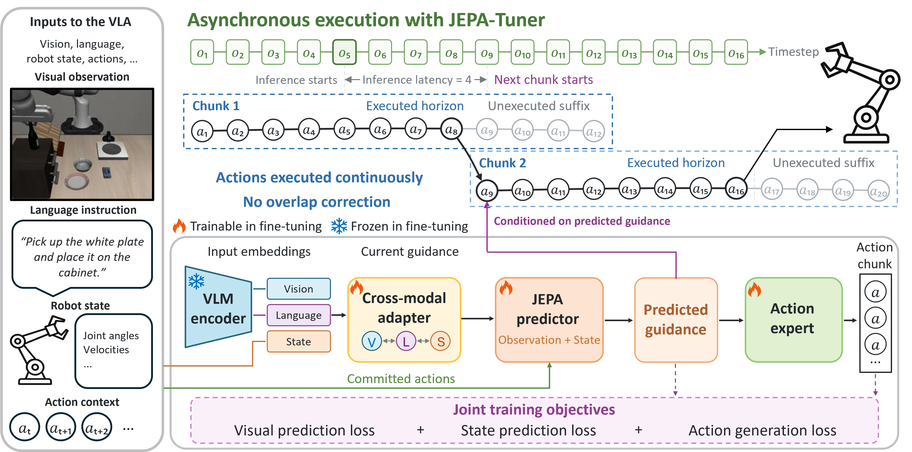
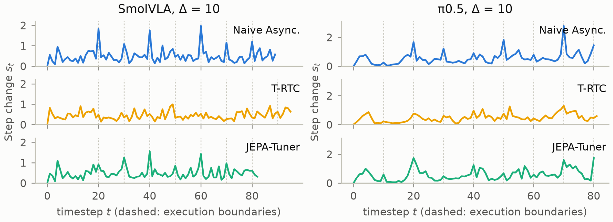

From Predictive Fine-Tuning to Asynchronous Execution of Vision-Language-Action Models
VLA fine-tuning ignores how actions change the scene and robot state, and asynchronous inference makes each new chunk start from a stale observation.
JEPA-Tuner adds an action-conditioned predictor that learns, during fine-tuning, how guidance and robot state evolve under actions, which improves VLA fine-tuning itself. At deployment, the same predictor anticipates the guidance at the next handoff, so each chunk runs from its first action with no overlap correction, giving a better trade-off between task success and smoothness.
Fuses vision, language and state into policy guidance.
Predicts guidance and state at t + d from the next d actions.
Action expert learns from observed and predicted guidance. VLM frozen.

| Backbone | LIBERO avg (%) | Meta-World MT50 avg (%) | ||
|---|---|---|---|---|
| Standard FT | JEPA-Tuner | Standard FT | JEPA-Tuner | |
| SmolVLA | 77.9 | 78.4 | 64.4 | 66.0 |
| π0.5 | 96.9 | 97.6 | 37.2 | 44.0 |
| GR00T N1 | 93.9 | 96.8 | 57.7 | 65.5 |
Only +0.4–0.9% params and +0.3–0.5% time per chunk over standard FT.
| Method | SmolVLA | π0.5 | ||||
|---|---|---|---|---|---|---|
| Δ = 5 | Δ = 10 | Δ = 15 | Δ = 5 | Δ = 10 | Δ = 15 | |
| Naive Async. | 77.6 | 68.5 | 53.8 | 94.5 | 73.5 | 32.4 |
| TE | 78.1 | 72.0 | 58.4 | 64.6 | 53.5 | 33.0 |
| BID | 79.4 | 72.3 | 60.1 | 94.7 | 74.9 | 34.9 |
| RTC | 59.6 | 58.4 | 57.3 | 89.2 | 72.5 | 31.1 |
| T-RTC | 64.5 | 61.1 | 58.3 | 94.5 | 74.4 | 34.6 |
| Legato | 45.8 | 43.1 | 42.5 | 89.2 | 67.0 | 34.1 |
| VLASH | 76.3 | 72.0 | 61.3 | 52.5 | 45.7 | 22.2 |
| REMAC | 45.9 | 52.1 | 57.4 | 94.7 | 80.1 | 46.5 |
| JEPA-Tuner | 77.3 | 76.8 | 72.1 | 95.8 | 85.4 | 58.2 |

Sharp spikes at handoffs: decodes from the query-time observation and skips elapsed actions.
Smoothest trace: each chunk is conditioned on the committed prefix, which can lock in the old motion.
Smaller spikes than Naive Async., and +15.7 / +11.0 success over T-RTC (SmolVLA / π0.5).
Click the video to pause / play.
| Task (robot) | Latency | Naive Async. | T-RTC | JEPA-Tuner |
|---|---|---|---|---|
| Simple (SO-101) | 0.50 s | 60% / 0.411 | 75% / 0.125 | 70% / 0.198 |
| 1.00 s | 65% / 0.837 | 55% / 0.137 | 80% / 0.223 | |
| Complex (SO-101) | 0.50 s | 35% / 0.343 | 35% / 0.123 | 55% / 0.178 |
| 1.00 s | 45% / 0.700 | 55% / 0.124 | 60% / 0.238 | |
| Simple (ALOHA) | 0.50 s | 60% / 0.362 | 85% / 0.112 | 90% / 0.167 |
| 0.67 s | 60% / 0.417 | 85% / 0.120 | 85% / 0.177 | |
| Complex (ALOHA) | 0.50 s | 70% / 0.756 | 60% / 0.397 | 80% / 0.575 |
| 0.67 s | 100% / 0.851 | 80% / 0.498 | 100% / 0.677 |
Green = best success per row · lower step change = smoother
@article{jepatuner,
title = {JEPA-Tuner: From Predictive Fine-Tuning to Asynchronous Execution of Vision-Language-Action Models},
author = {Qu, Jingxiang and Xie, Tian and Hong, Youngjin and Choi, Changhyun and Zhao, Yang Katie and Liu, Yi},
journal = {arXiv preprint arXiv:2611.29096},
url = {https://arxiv.org/abs/2611.29096},
year = {2026}
}